Scuttlebutt Protocol Guide
How Scuttlebutt peers find and talk to each other
Scuttlebutt is a protocol for building decentralized applications that work well offline and that no one person can control. Because there is no central server, Scuttlebutt clients connect to their peers to exchange information. This guide describes the protocols used to communicate within the Scuttlebutt network.
Scuttlebutt is a flexible protocol, capable of supporting many different types of applications. One of its first applications was as a social network, and it has also become one of the most compelling because the people who hang out there are not jerks. This guide has a slight focus on how to use Scuttlebutt for social networking, but many of the explanations will still be useful if want to use it for something completely different, or are just curious how it works.
Keys and identities
The first thing a user needs to participate in Scuttlebutt is an identity. An identity is an Ed25519 key pair and typically represents a person, a device, a server or a bot. It’s normal for a person to have several Scuttlebutt identities.
Upon starting for the first time, Scuttlebutt clients will automatically generate an Ed25519 key pair and save it in the user’s home folder under .ssb/secret.
Because identities are long and random, no coordination or permission is required to create a new one, which is essential to the network’s design.
Later, a user can choose to give themselves a nickname or avatar to make themselves easier to refer to. Over time nicknames may change but identities stay the same. If a user loses their secret key or has it stolen they will need to generate a new identity and tell people to use their new one instead.
The public key of an identity is presented to users and transmitted in some parts of the network protocol using this format:
The beginning @ sign signifies that this represents a public key rather than a message or blob, which start with % and &. Each identity has an associated feed, which is a list of all the messages posted by that identity. This is why the identity is also called a feed ID.
Discovery
After a user has generated their identity they need to find some peers to connect to. To connect to a peer you need to know its IP address, port number and public key. The Scuttlebutt protocol currently has three methods for peers to discover each other.
Local network
Peers constantly broadcast UDP packets on their local network advertising their presence. The body of each packet is a string containing the peer’s IP address, port and base64-encoded public key (without @ or .ed25519):
Current implementations broadcast one of these packets every second. When a peer sees another peer’s broadcast packet they can connect to exchange messages. Some clients show nearby peers in the user interface so that the user can see other people on the same network as them.
Invite code
Invite codes help new users get connected to their first pub, which is a Scuttlebutt peer that is publicly accessible over the internet. An invite code contains a pub’s domain name, port and public key.
They also contain a secret key that the user can redeem to make the pub follow them back. This lets the new user see messages posted by other members of the pub and share their own messages. Invite codes are the most common way for new users to get started on Scuttlebutt.
Pub operators can distribute invite codes any way they see fit, for example by posting them on existing social networks. Some pubs have a web page that anybody can visit to generate an invite code.
Pub message
Users can post a message to their own feed advertising a pub:
{
"author": "@FCX/tsDLpubCPKKfIrw4gc+SQkHcaD17s7GI6i/ziWY=.ed25519",
"content": {
"type": "pub",
"address": {
"host": "one.butt.nz",
"port": 8008,
"key": "@VJM7w1W19ZsKmG2KnfaoKIM66BRoreEkzaVm/J//wl8=.ed25519"
}
},
…
}When others see this message they can make a note that this pub exists and connect to it in the future.
Pub messages are a useful way to find additional peers if you already know a few. Obviously this doesn’t work for new users who don’t know anyone else yet and therefore can’t see any pub messages.
Peer connections
Once a Scuttlebutt client has discovered the IP address, port number and public key of a peer they can connect via TCP to ask for updates and exchange messages.
Handshake
The connection begins with a 4-step handshake to authenticate each peer and set up an encrypted channel.
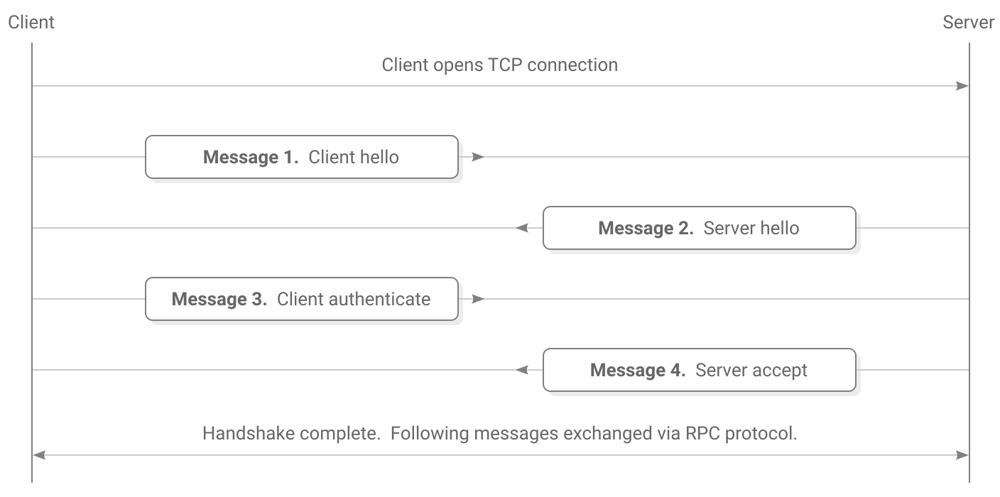The handshake uses the Secret Handshake key exchange which is designed to have these security properties:
- After a successful handshake the peers have verified each other’s public keys.
- The handshake produces a shared secret that can be used with a bulk encryption cypher for exchanging further messages.
- The client must know the server’s public key before connecting. The server learns the client’s public key during the handshake.
- Once the client has proven their identity the server can decide they don’t want to talk to this client and disconnect without confirming their own identity.
- A man-in-the-middle cannot learn the public key of either peer.
- Both peers need to know a key that represents the particular Scuttlebutt network they wish to connect to, however a man-in-the-middle can’t learn this key from the handshake. If the handshake succeeds then both ends have confirmed that they wish to use the same network.
- Past handshakes cannot be replayed. Attempting to replay a handshake will not allow an attacker to discover or confirm guesses about the participants’ public keys.
- Handshakes provide forward secrecy. Recording a user’s network traffic and then later stealing their secret key will not allow an attacker to decrypt their past handshakes.
Starting keys
Upon starting the handshake, the client and server know these keys:
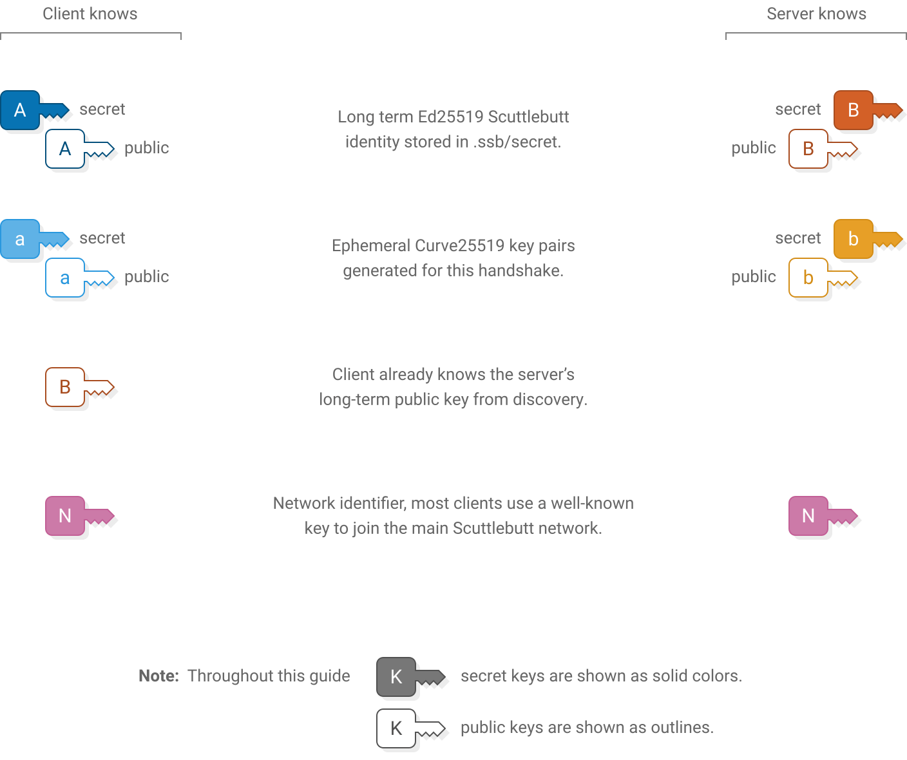1. Client hello
Client sends (64 bytes)
Server verifies
concat(
nacl_auth(
msg: client_ephemeral_pk,
key: network_identifier
),
client_ephemeral_pk
)assert(length(msg1) == 64)
client_hmac = first_32_bytes(msg1)
client_ephemeral_pk = last_32_bytes(msg1)
assert_nacl_auth_verify(
authenticator: client_hmac,
msg: client_ephemeral_pk,
key: network_identifier
)First the client sends their generated ephemeral key. Also included is an hmac that indicates the client wishes to use their key with this specific instance of the Scuttlebutt network.
The network identifier is a fixed key. On the main Scuttlebutt network it is the following 32-byte sequence:
Changing the key allows separate networks to be created, for example private networks or testnets. An eavesdropper cannot extract the network identifier directly from what is sent over the wire, although they could confirm a guess that it is the main Scuttlebutt network because that identifier is publicly known.
The server stores the client’s ephemeral public key and uses the hmac to verify that the client is using the same network identifier.
2. Server hello
Client verifies
Server sends (64 bytes)
assert(length(msg2) == 64)
server_hmac = first_32_bytes(msg2)
server_ephemeral_pk = last_32_bytes(msg2)
assert_nacl_auth_verify(
authenticator: server_hmac,
msg: server_ephemeral_pk,
key: network_identifier
)concat(
nacl_auth(
msg: server_ephemeral_pk,
key: network_identifier
),
server_ephemeral_pk
)The server responds with their own ephemeral public key and hmac. The client stores the key and verifies that they are also using the same network identifier.
Shared secret derivation
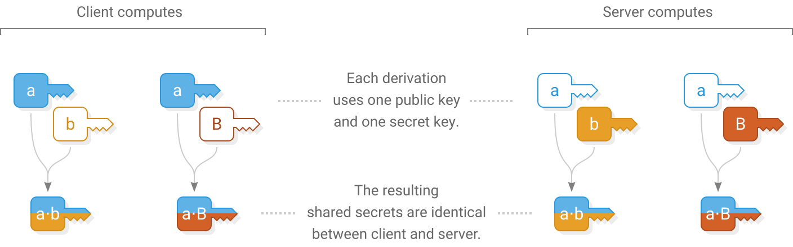Client computes
Server computes
shared_secret_ab = nacl_scalarmult(
client_ephemeral_sk,
server_ephemeral_pk
)
shared_secret_aB = nacl_scalarmult(
client_ephemeral_sk,
pk_to_curve25519(server_longterm_pk)
)shared_secret_ab = nacl_scalarmult(
server_ephemeral_sk,
client_ephemeral_pk
)
shared_secret_aB = nacl_scalarmult(
sk_to_curve25519(server_longterm_sk),
client_ephemeral_pk
)Now that ephemeral keys have been exchanged, both ends use them to derive a shared secret  using scalar multiplication.
using scalar multiplication.
The client and server each combine their own ephemeral secret key with the other’s ephemeral public key to produce the same shared secret on both ends. An eavesdropper doesn’t know either secret key so they can’t generate the shared secret. A man-in-the-middle could swap out the ephemeral keys in Messages 1 and 2 for their own keys, so the shared secret alone is not enough for the client and server to know that they are talking to each other and not a man-in-the-middle.
Because the client already knows the server’s long term public key, both ends derive a second secret that will allow the client to send a message that only the real server can read and not a man-in-the-middle.
3. Client authenticate

Client computes
Server verifies
detached_signature_A = nacl_sign_detached(
msg: concat(
network_identifier,
server_longterm_pk,
sha256(shared_secret_ab)
),
key: client_longterm_sk
)msg3_plaintext = assert_nacl_secretbox_open(
ciphertext: msg3,
nonce: 24_bytes_of_zeros,
key: sha256(
concat(
network_identifier,
shared_secret_ab,
shared_secret_aB
)
)
)
assert(length(msg3_plaintext) == 96)
detached_signature_A = first_64_bytes(msg3_plaintext)
client_longterm_pk = last_32_bytes(msg3_plaintext)
assert_nacl_sign_verify_detached(
sig: detached_signature_A,
msg: concat(
network_identifier,
server_longterm_pk,
sha256(shared_secret_ab)
),
key: client_longterm_pk
)Client sends (112 bytes)
nacl_secret_box(
msg: concat(
detached_signature_A,
client_longterm_pk
),
nonce: 24_bytes_of_zeros,
key: sha256(
concat(
network_identifier,
shared_secret_ab,
shared_secret_aB
)
)
)The client reveals their identity to the server by sending their long term public key. The client also makes a signature using their long term secret key. By signing the keys used earlier in the handshake the client proves their identity and confirms that they do indeed wish to be part of this handshake.
The client’s message is enclosed in a secret box to ensure that only the server can read it. Upon receiving it, the server opens the box, stores the client’s long term public key and verifies the signature.
An all-zero nonce is used for the secret box. The secret box construction requires that all secret boxes using a particular key must use different nonces. It’s important to get this detail right because reusing a nonce will allow an attacker to recover the key and encrypt or decrypt any secret boxes using that key. Using a zero nonce is allowed here because this is the only secret box that ever uses the key sha256(concat( , , )).
Shared secret derivation
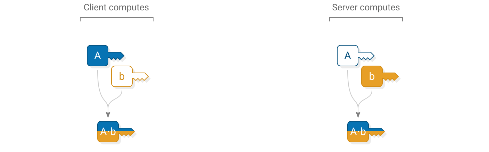Client computes
Server computes
shared_secret_Ab = nacl_scalarmult(
sk_to_curve25519(client_longterm_sk),
server_ephemeral_pk
)shared_secret_Ab = nacl_scalarmult(
server_ephemeral_sk,
pk_to_curve25519(client_longterm_pk)
)Now that the server knows the client’s long term public key, another shared secret is derived by both ends. The server uses this shared secret to send a message that only the real client can read and not a man-in-the-middle.
4. Server accept
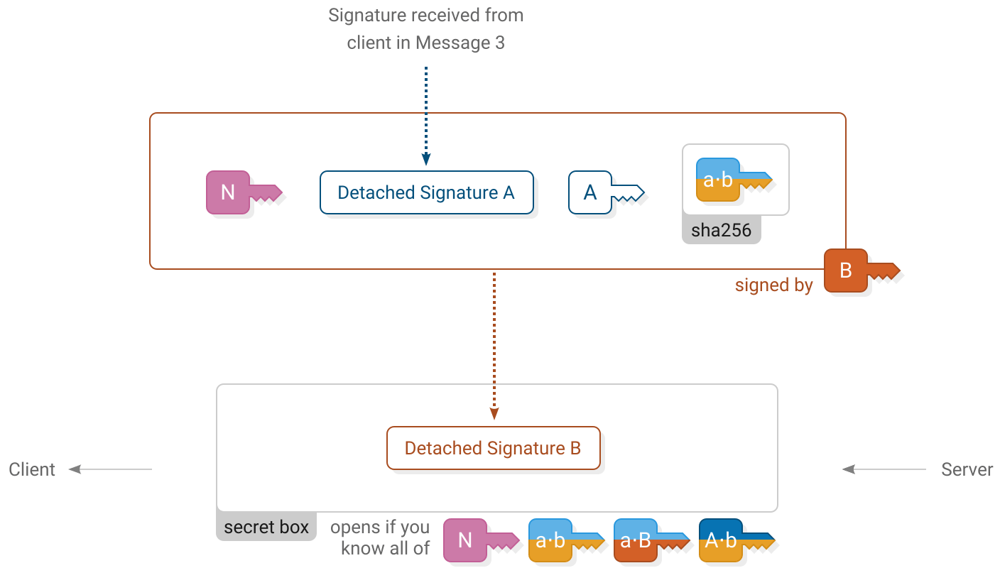Client verifies
Server computes
detached_signature_B = assert_nacl_secretbox_open(
ciphertext: msg4,
nonce: 24_bytes_of_zeros,
key: sha256(
concat(
network_identifier,
shared_secret_ab,
shared_secret_aB,
shared_secret_Ab
)
)
)
assert_nacl_sign_verify_detached(
sig: detached_signature_B,
msg: concat(
network_identifier,
detached_signature_A,
client_longterm_pk,
sha256(shared_secret_ab)
),
key: server_longterm_pk
)detached_signature_B = nacl_sign_detached(
msg: concat(
network_identifier,
detached_signature_A,
client_longterm_pk,
sha256(shared_secret_ab)
),
key: server_longterm_sk
)Server sends (80 bytes)
nacl_secret_box(
msg: detached_signature_B,
nonce: 24_bytes_of_zeros,
key: sha256(
concat(
network_identifier,
shared_secret_ab,
shared_secret_aB,
shared_secret_Ab
)
)
)The server accepts the handshake by signing a message using their long term secret key. It includes a copy of the client’s previous signature. The server’s signature is enclosed in a secret box using all of the shared secrets.
Upon receiving it, the client opens the box and verifies the server’s signature.
Similarly to the previous message, this secret box also uses an all-zero nonce because it is the only secret box that ever uses the key sha256(concat( , , , )).
Handshake complete
At this point the handshake has succeeded. The client and server have proven their identities to each other.
The shared secrets established during the handshake are used to set up a pair of box streams for securely exchanging further messages.
Box stream
Box stream is the bulk encryption protocol used to exchange messages following the handshake until the connection ends. It is designed to protect messages from being read or modified by a man-in-the-middle.
Each message in a box stream has a header and body. The header is always 34 bytes long and says how long the body will be.
Sending
Sending a message involves encrypting the body of the message and preparing a header for it. Two secret boxes are used; one to protect the header and another to protect the body.
Receiving
Receiving a message involves reading the header to find out how long the body is then reassembling and opening the body secret box.
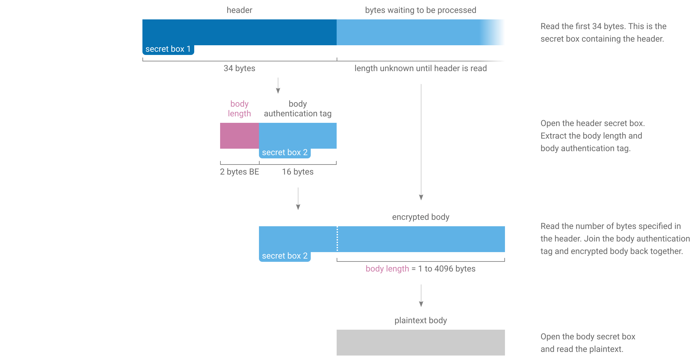Goodbye
The stream ends with a special “goodbye” header. Because the goodbye header is authenticated it allows a receiver to tell the difference between the connection genuinely being finished and a man-in-the-middle forcibly resetting the underlying TCP connection.
When a receiver opens a header and finds that it contains all zeros then they will know that the connection is finished.
Keys and nonces
Two box streams are used at the same time when Scuttlebutt peers communicate. One is for client-to-server messages and the other is for server-to-client messages. The two streams use different keys and starting nonces for their secret boxes.
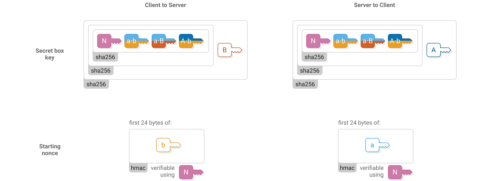The starting nonce is used for the first header in the stream (“secret box 1” in the above figures), then incremented for the first body (“secret box 2”), then incremented for the next header and so on.
RPC protocol
Scuttlebutt peers make requests to each other using an RPC protocol. Typical requests include asking for the latest messages in a particular feed or requesting a blob.
The RPC protocol can interleave multiple requests so that a slow request doesn’t block following ones. It also handles long-running asynchronous requests for notifying when an event occurs and streams that deliver multiple responses over time.
Similar to the box stream protocol, the RPC protocol consists of fixed-length headers followed by variable-length bodies. There is also a goodbye message which is just a zeroed out header.
Both peers make requests to each other at the same time using the pair of box streams that have been established. The box streams protect the RPC protocol from eavesdropping and tampering.
Header structure
RPC headers contain a set of flags to say what type of message it is, a field specifying its length and a request number which allows matching requests with their responses when there are several active at the same time.
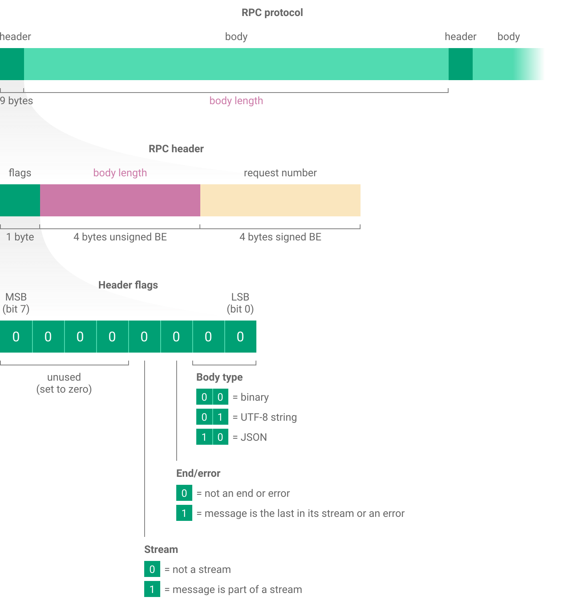Request format
To make an RPC request, send a JSON message containing the name of the procedure you wish to call, the type of procedure and any arguments.
The name is a list of strings. For a top-level procedure like createHistoryStream the list only has one element: ["createHistoryStream"]. Procedures relating to blobs are grouped in the blobs namespace, for example to use blobs.get send the list: ["blobs", "get"].
There are two types of procedure used when Scuttlebutt peers talk to each other:
- Source procedures return multiple responses over time and are used for streaming data or continually notifying when new events occur. When making one of these requests, the stream flag in the RPC header must be set.
- Async procedures return a single response. Async responses can arrive quickly or arrive much later in response to a one-off event.
For each procedure in the RPC protocol you must already know whether it is source or async and correctly specify this in the request body.
Source example
This RPC message shows an example of a createHistoryStream request:
{
"name": ["createHistoryStream"],
"type": "source",
"args": [{"id": "@FCX/tsDLpubCPKKfIrw4gc+SQkHcaD17s7GI6i/ziWY=.ed25519"}]
}createHistoryStream is how Scuttlebutt peers ask each other for a list of messages posted by a particular feed. It has one argument that is a JSON dictionary specifying more options about the request. id is the only required option and says which feed you are interested in.
Because this is the first RPC request, the request number is 1. The next request made by this peer will be numbered 2. The other peer will also use request number 1 for their first request, but the peers can tell these apart because they know whether they sent or received each request.
Now the responder begins streaming back responses:
{
"key": "%XphMUkWQtomKjXQvFGfsGYpt69sgEY7Y4Vou9cEuJho=.sha256",
"value": {
"previous": null,
"author": "@FCX/tsDLpubCPKKfIrw4gc+SQkHcaD17s7GI6i/ziWY=.ed25519",
"sequence": 1,
"timestamp": 1514517067954,
"hash": "sha256",
"content": {
"type": "post",
"text": "This is the first post!"
},
"signature": "QYOR/zU9dxE1aKBaxc3C0DJ4gRyZtlMfPLt+CGJcY73sv5abKK
Kxr1SqhOvnm8TY784VHE8kZHCD8RdzFl1tBA==.sig.ed25519"
},
"timestamp": 1514517067956
}{
"key": "%R7lJEkz27lNijPhYNDzYoPjM0Fp+bFWzwX0SmNJB/ZE=.sha256",
"value": {
"previous": "%XphMUkWQtomKjXQvFGfsGYpt69sgEY7Y4Vou9cEuJho=.sha256",
"author": "@FCX/tsDLpubCPKKfIrw4gc+SQkHcaD17s7GI6i/ziWY=.ed25519",
"sequence": 2,
"timestamp": 1514517078157,
"hash": "sha256",
"content": {
"type": "post",
"text": "Second post!"
},
"signature": "z7W1ERg9UYZjNfE72ZwEuJF79khG+eOHWFp6iF+KLuSrw8Lqa6
IousK4cCn9T5qFa8E14GVek4cAMmMbjqDnAg==.sig.ed25519"
},
"timestamp": 1514517078160
}Each message posted by the feed is sent back in its own response. This feed only contains two messages.
To close the stream the responder sends an RPC message with both the stream and end/err flags set and a JSON body of true. When the requester sees that the stream is being closed they send a final message to close their own end of it (source type requests must always be closed by both ends).
truetrueAlternatively, to abort a stream before it is finished the requester can send their closing message early, at which point the responder closes their own end.
truetrueAsync example
One of the few public async procedures is blobs.has, which peers use to ask each other whether they have a particular blob.
In this example the requester is asking the responder if they have blob &WWw4tQJ6…:
{
"name": ["blobs", "has"],
"type": "async",
"args": ["&WWw4tQJ6ZrM7o3gA8lOEAcO4zmyqXqb/3bmIKTLQepo=.sha256"]
}The responder does in fact have this blob so they respond with true. Because this is an async procedure and not a stream, there is only one response and no need to close the stream afterwards:
trueError example
Let’s take the previous example and introduce a programming mistake to see how the RPC protocol handles errors:
{
"name": ["blobs", "has"],
"type": "async",
"args": ["this was a mistake"]
}{
"name": "Error",
"message": "invalid hash:this was a mistake",
"stack": "…"
}Most importantly, the response has the end/err flag set to indicate that an error occurred. The reference Scuttlebot implementation also includes an error message and a JavaScript stack trace.
For source type procedures an error will also end the stream because the end/err flag has the dual purpose of ending streams and indicating that an error occurred.
Feeds
A Scuttlebutt feed is a list of all the messages posted by a particular identity. When a user writes a message in a Scuttlebutt client and posts it, that message is put onto the end of their feed.
Structure
The messages in a feed form an append-only log, meaning that once a message is posted it cannot be modified. Each message (except the first one) references the ID of the previous message, allowing a chain to be constructed back to the first message in the feed.
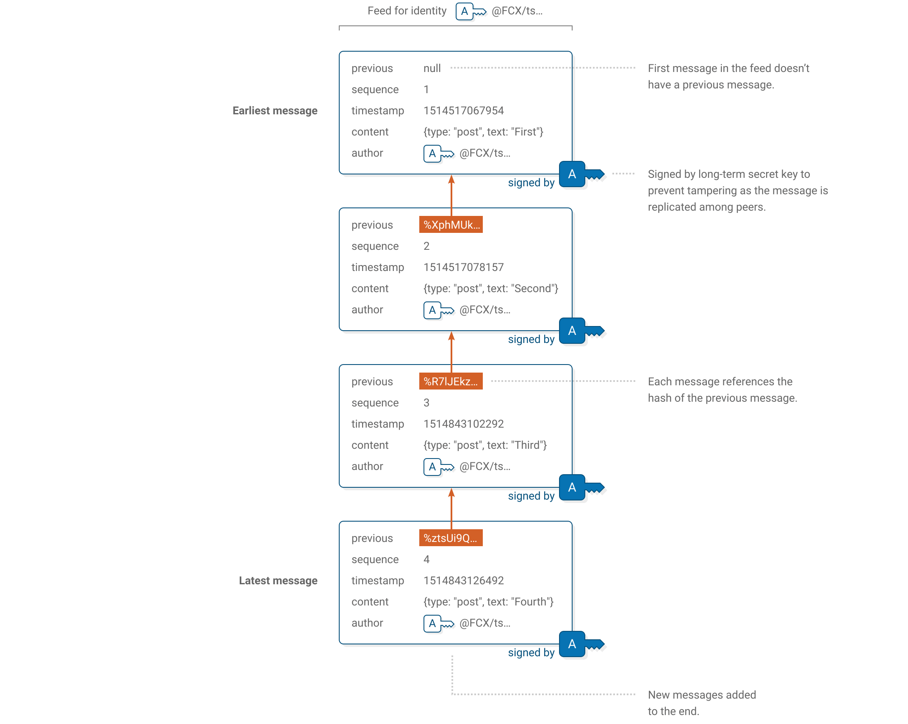Message format
To create a message to post in a feed, start by filling out these fields:
{
"previous": "%XphMUkWQtomKjXQvFGfsGYpt69sgEY7Y4Vou9cEuJho=.sha256",
"author": "@FCX/tsDLpubCPKKfIrw4gc+SQkHcaD17s7GI6i/ziWY=.ed25519",
"sequence": 2,
"timestamp": 1514517078157,
"hash": "sha256",
"content": {
"type": "post",
"text": "Second post!"
}
}
| previous | Message ID of the latest message posted in the feed. If this is the very first message then use null. See below for how to compute a message’s ID. |
| author | Public key of the feed that the message will be posted in. |
| sequence | 1 for the first message in a feed, 2 for the second and so on. |
| timestamp | Time the message was created. Number of milliseconds since 1 January 1970 00:00 UTC. |
| hash | The fixed string sha256, which is the hash function used to compute the message ID. |
| content | Dictionary containing free-form data for applications to interpret, plus a mandatory type field. The type field allows applications to filter out message types they don’t understand and must be a string between 3 and 52 characters long (inclusive). |
Signature
All messages in a feed are signed by that feed’s long-term secret key. This enables recipients to verify that a message was really posted by a particular identity and not tampered with as it gets gossiped and replicated throughout the Scuttlebutt network.
Before signing a message it must be serialized according to a specific canonical JSON format. This means for any given message there is exactly one way to serialize it as a sequence of bytes, which is necessary for signature verification to work. The reference implementation verifies that all messages it receives are in the canonical format and rejects messages that aren’t.
The canonical format is defined by the ECMA-262 6th Edition section JSON.stringify. For an example, see how the above message is formatted.
In brief, the rules are:
- Two spaces for indentation.
- Dictionary entries and list elements each on their own line.
- Empty dictionaries appear as
{}and empty lists appear as[]. - One space after the colon
:for dictionary keys. - Strings and numbers formatted according to the sections QuoteJSONString and ToString Applied to the Number Type.
- No trailing newline.
Then sign the message by computing:
signature = nacl_sign_detached(
msg: formatted_json_message,
key: authors_longterm_sk
)Base64 encode the signature and put .sig.ed25519 on the end. Finally, add the signature to the message itself. It must be the last entry in the dictionary:
{
"previous": "%XphMUkWQtomKjXQvFGfsGYpt69sgEY7Y4Vou9cEuJho=.sha256",
"author": "@FCX/tsDLpubCPKKfIrw4gc+SQkHcaD17s7GI6i/ziWY=.ed25519",
"sequence": 2,
"timestamp": 1514517078157,
"hash": "sha256",
"content": {
"type": "post",
"text": "Second post!"
},
"signature": "z7W1ERg9UYZjNfE72ZwEuJF79khG+eOHWFp6iF+KLuSrw8Lqa6
IousK4cCn9T5qFa8E14GVek4cAMmMbjqDnAg==.sig.ed25519"
}To verify the signature, first remove the signature field from the message. Make sure the remaining message is formatted as JSON using the same formatting rules. Here the order of dictionary entries within content matters; they must be in the same order that you received them.
Then remove the .sig.ed25519 suffix from the signature, base64 decode it and verify with:
nacl_sign_verify_detached(
sig: signature,
msg: formatted_json_message,
key: authors_longterm_pk
)Message ID
A message ID is a hash of the message including signature. Messages can refer to other messages by their ID.
To compute a message’s ID, first format it as JSON using the formatting rules. Like with signatures, dictionary keys must appear in the same order that you received them. The signature key must appear last as shown above (but without wrapping the line).
The ID of the above message is:
Currently all IDs are computed using sha256. However the protocol includes the name of the hash function in message IDs and the messages themselves to allow migrating to a different one if needed in the future.
createHistoryStream
Scuttlebutt clients maintain a set of feeds that they are interested in. These could be feeds that the user has followed, bookmarked or subscribed to. When peers connect, one of the first things they do is ask each other whether the feeds they are interested in have any new messages.
The RPC procedure createHistoryStream is how peers ask each other for a list of messages in a particular feed.
{
"name": ["createHistoryStream"],
"type": "source",
"args": [
{
"id": "@FCX/tsDLpubCPKKfIrw4gc+SQkHcaD17s7GI6i/ziWY=.ed25519",
"sequence": 2,
"limit": 1,
"live": false,
"old": true,
"keys": true
}
]
}createHistoryStream takes one argument which is a dictionary of additional options that controls how the feed is returned. Valid options are:
| id | Public key of the feed to return messages from. Required. |
| sequence | Only return messages later than this sequence number. If not specified then start from the very beginning of the feed. |
| limit | Maximum number of messages to return. If the limit is exceeded only the earliest messages are returned. Default: unlimited. |
| live | If true, keep the stream alive and send new messages as they are posted. If false, end the stream after messages are sent and don’t wait for new ones. Default: false. |
| old | Used together with live. If true, start by sending existing messages already posted by this feed. If false, don’t send existing messages posted by this feed, only send new messages as they arrive. Default: true. |
| keys | If true, also include message IDs and timestamps of when each message was received by this peer. If false, just send the messages themselves. Default: true. |
Here is a comparison of createHistoryStream responses with keys set to true and false:
{
"name": ["createHistoryStream"],
"type": "source",
"args": [
{
"id": "@FCX/tsDLpubCPKKfIrw4gc+SQkHcaD17s7GI6i/ziWY=.ed25519",
"keys": true
}
]
}{
"key": "%XphMUkWQtomKjXQvFGfsGYpt69sgEY7Y4Vou9cEuJho=.sha256",
"value": {
"previous": null,
"author": "@FCX/tsDLpubCPKKfIrw4gc+SQkHcaD17s7GI6i/ziWY=.ed25519",
"sequence": 1,
"timestamp": 1514517067954,
"hash": "sha256",
"content": {
"type": "post",
"text": "This is the first post!"
},
"signature": "QYOR/zU9dxE1aKBaxc3C0DJ4gRyZtlMfPLt+CGJcY73sv5abKK
Kxr1SqhOvnm8TY784VHE8kZHCD8RdzFl1tBA==.sig.ed25519"
},
"timestamp": 1514517067956
}{
"name": ["createHistoryStream"],
"type": "source",
"args": [
{
"id": "@FCX/tsDLpubCPKKfIrw4gc+SQkHcaD17s7GI6i/ziWY=.ed25519",
"keys": false
}
]
}{
"previous": null,
"author": "@FCX/tsDLpubCPKKfIrw4gc+SQkHcaD17s7GI6i/ziWY=.ed25519",
"sequence": 1,
"timestamp": 1514517067954,
"hash": "sha256",
"content": {
"type": "post",
"text": "This is the first post!"
},
"signature": "QYOR/zU9dxE1aKBaxc3C0DJ4gRyZtlMfPLt+CGJcY73sv5abKK
Kxr1SqhOvnm8TY784VHE8kZHCD8RdzFl1tBA==.sig.ed25519"
}Blobs
A blob is binary data. Blobs are referred to from Scuttlebutt messages and stored by peers in the network. When a user attaches an image to their post, that image is stored as a blob and the message contains a link to it.
Being just a sequence of bytes, blobs can contain any data, unlike feeds and messages which have a specific structure. Blobs can handle much larger amounts of data than feeds or messages, which is why they are stored separately. However, clients may decide to not replicate blobs larger than a chosen size, which defaults to 5 megabytes in current implementations.
Blobs are referred to by their blob ID:
Blobs are immutable because their ID contains a hash of their contents. This allows peers to fetch blobs from anyone in the network and know they haven’t been tampered with.
When a Scuttlebutt implementation receives a new message and sees that it references a blob, it might be a good time to fetch that blob so that the complete message will be available to show the user.
Fetching
There are two RPC methods for fetching blobs. To get an entire blob use blobs.get, or for only part of the blob use blobs.getSlice.
blobs.get
blobs.get asks a peer to send you the contents of a blob. There is one argument which is the blob ID:
{
"name": ["blobs", "get"],
"type": "source",
"args": ["&uaGieSQDJcHfUp6hjIcIq55GoZh4Ug7tNmgaohoxrpw=.sha256"]
}Now the responder begins streaming back the contents of the blob. Each response has a body type of binary and contains a piece of the blob, starting from the beginning.
This particular blob is 161,699 bytes long and the responder has decided to send it in pieces of 65,536 bytes each. That means two full pieces of 65,536 bytes will be sent and a final piece with the remaining 30,627 bytes.
Finally, the stream is closed with a JSON message of true with the end/err flag set. The requester sees that the stream is being closed and closes their end of the stream too:
truetrueUpon receiving the blob the requester should check that what they received matches the sha256 checksum they asked for.
blobs.get has an alternate form where the first argument is a JSON dictionary of options:
{
"name": ["blobs", "get"],
"type": "source",
"args": [
{
"hash": "&uaGieSQDJcHfUp6hjIcIq55GoZh4Ug7tNmgaohoxrpw=.sha256",
"size": 161699,
"max": 200000
}
]
}Valid options are:
| hash | ID of the blob. Required. |
| size | Expected size of the blob in bytes. If the blob is not exactly this size then reject the request. Optional. |
| max | Maximum size of the blob in bytes. If the blob is larger then reject the request. Only makes sense to specify max if you don’t already know size. Optional. |
This form allows the responder to reject the request if the blob is not the expected size or too large. When a request is rejected the responder sends back a single message with the end/err flag set containing a JSON error message.
blobs.getSlice
blobs.getSlice works like blobs.get but rather than receiving the entire blob, the requester specifies a start and end point and the responder only sends back bytes within that range.
Reasons for using blobs.getSlice could be to download a blob in pieces from many peers at once, to resume a partially-completed download or to fetch the first part of a video to show a preview. Though beware that if you only fetch part of a blob you cannot be sure that it hasn’t been tampered with. You need the whole blob to verify its integrity.
{
"name": ["blobs", "getSlice"],
"type": "source",
"args": [
{
"hash": "&uaGieSQDJcHfUp6hjIcIq55GoZh4Ug7tNmgaohoxrpw=.sha256",
"start": 65536,
"end": 65584
}
]
}truetrueStart and end are byte offsets from the start of the blob and form a half-open interval, meaning the end byte is not included.
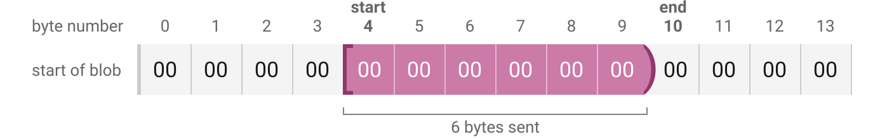Specifying start = 0 means start from the beginning of the blob. Specifying end = size of the blob means keep going all the way to the end of the blob.
blobs.getSlice also accepts the size and max options, which work the same as in blobs.get. These two options refer to the size of the entire blob, not the range requested.
Want and have
Peers signal to each other which blobs they want and have. This lets peers know who they can fetch a particular blob from. It also allows requests for blobs to propagate through the network until a peer that has the blob is found.
Upon connecting, peers typically invoke the RPC method blobs.createWants on each other. blobs.createWants asks a peer to tell you which blobs they want, and also allows the peer to tell you which blobs they have.
{
"name": ["blobs", "createWants"],
"type": "source",
"args": []
}{}Responding with an empty dictionary {} means they don’t currently want any blobs. Later, when they want a particular blob the responder will send another response back:
{"&uaGieSQDJcHfUp6hjIcIq55GoZh4Ug7tNmgaohoxrpw=.sha256": -1}The -1 means the responder wants this blob themselves. -2 means they know someone who wants the blob. -3 means they know someone who knows someone who wants the blob, and so on.
If a peer tells you that they want a blob and you don’t have it yourself then you can forward the want to other peers you are connected to. When forwarding a request, remember to subtract one from the number so that the request does not keep propagating through the network in an infinite loop.
Implementations can pick a limit and ignore blob requests that come from further out than their threshold. The reference implementation forwards requests with -1 or -2, but does not forward requests with -3 or further out.
If the responder does in fact have the blob, they can respond with its size in bytes:
{"&uaGieSQDJcHfUp6hjIcIq55GoZh4Ug7tNmgaohoxrpw=.sha256": 161699}Now the requester knows they can retrieve the blob from this peer with blobs.get or blobs.getSlice. 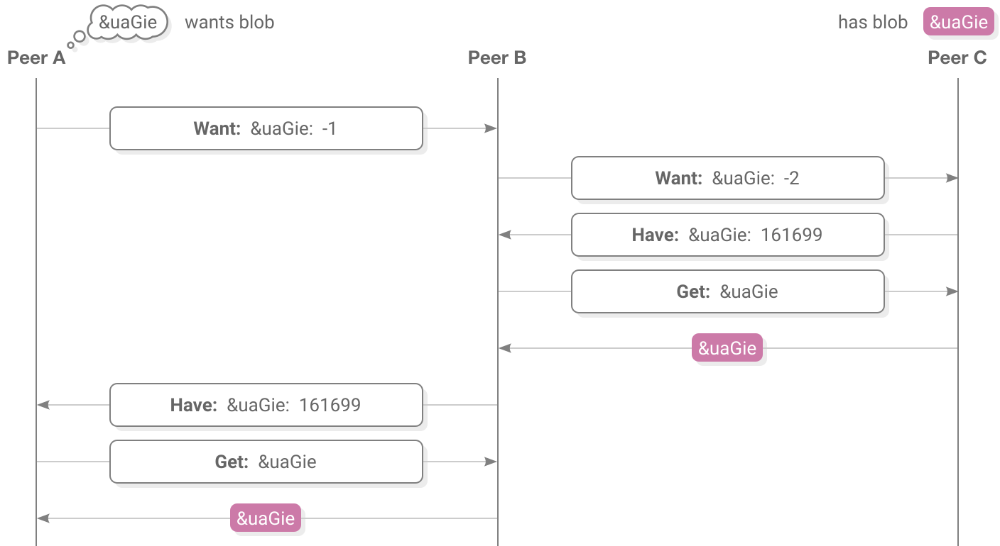
Following
Feeds can follow other feeds. Following is a way of saying “I am interested in the messages posted by this feed”.
Following is an optional part of Scuttlebutt, however current clients do implement it because it enables interesting social dynamics, such as introducing people that otherwise wouldn’t have found each other and allowing trust to be built within human networks. Following is what enables Scuttlebutt to be a social network rather than a group messenger.
When a user wants to follow another feed their client will post a message to their own feed that looks like:
{
"author": "@FCX/tsDLpubCPKKfIrw4gc+SQkHcaD17s7GI6i/ziWY=.ed25519",
"content": {
"type": "contact",
"contact": "@sxlUkN7dW/qZ23Wid6J1IAnqWEJ3V13dT6TaFtn5LTc=.ed25519",
"following": true
},
…
}Later, if the user decides to unfollow this feed, their client can post another message with following set to false.
When two feeds follow each other current user interfaces will call them “friends”, however this is just a cosmetic touch and for everything else they are still treated as individual follows in each direction.
Follow graph
Because each feed publicly announces which feeds it is following, clients can arrange feeds into a graph of who follows who:
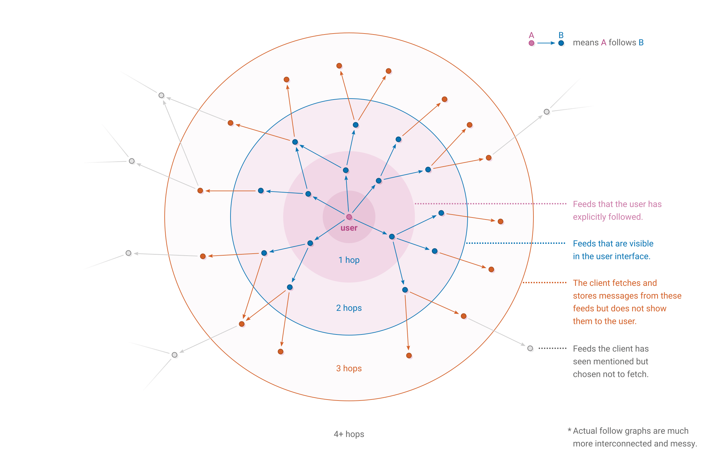Clients may want to use the follow graph to decide which feeds to display to the user and which to replicate. If the user explicitly follows a feed that is a strong signal that the user wants to see messages posted by that feed.
One implementation, Patchwork, shows messages up to 2 hops out by default. Messages from feeds 3 hops out are replicated to help keep them available for others, but not directly shown in the user interface. A benefit of replicating at a greater range is that for discussion threads with lots of participants it’s more likely that the client will be able to fill in gaps where someone posted who was further than 2 hops out.
Clients could also let users configure how far the visibility and replication ranges are, or a client could use an entirely different method of deciding which feeds to show and replicate that is not based on follow range.
Pubs
A pub is a publicly-accessible Scuttlebutt peer. Pubs have a social and a technical purpose:
- Pubs serve as a gathering point for new users to find other people and for existing users to welcome people who have just joined.
- Pubs have a stable IP address and allow incoming TCP connections, which enables users to connect even if their internet service provider lacks dedicated IP addresses or refuses incoming connections.
Pubs speak the same protocol as regular peers and behave like regular peers except that they are normally run on servers so that they are always online.
Joining a pub means following it and having it follow you back. After a new user joins a pub they will be able to see posts by the pub’s other members, and crucially the other members will be able to see the new member. This works because everyone is now within 2 hops of each other:
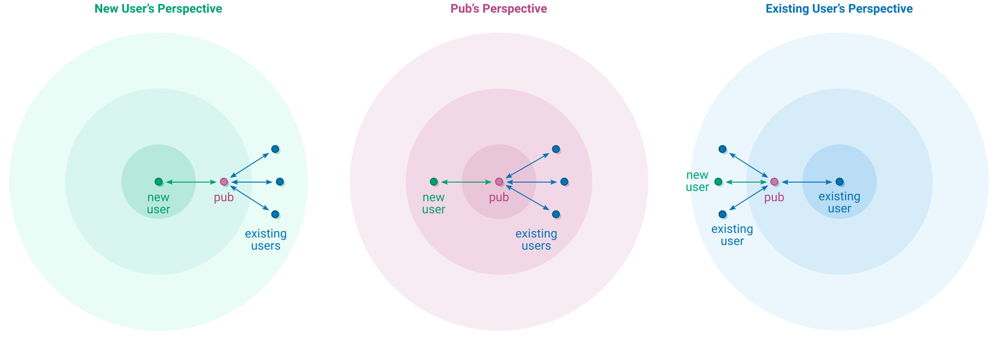After joining a pub, a user may decide to follow some of its members directly, in which case the pub is no longer needed for feed visibility but is still useful for accepting TCP connections and replicating messages.
Invites
Any user can follow a pub by posting a follow message, but to get the pub to follow you back you need an invite.
How the pub hands out invites is for its operator to decide. Some pubs have a web page that anybody can visit to generate an invite code. Some pubs have a pre-generated list of invite codes that the operator distributes. Invite codes can be single-use-only, have a maximum number of uses before they expire, or keep working indefinitely. A single user can use several invites if they wish to join several different pubs.
Invite codes use this format:
To make a new invite code, a pub generates a new Ed25519 key pair. The secret key goes into the invite code, which is given to either a new user or the pub operator to distribute. The public key is remembered by the pub along with any extra conditions such as the number of remaining uses or expiry date.
Redeeming invites
To redeem an invite, a user enters the invite code into their Scuttlebutt client. The client opens a new TCP connection to the domain and port contained in the invite and proceeds to set up a peer connection, starting with the handshake.
However, unlike a regular handshake, the client uses the secret key in the invite as their long term secret key. Because the invite only contains the secret key but not the public key, the client will need to calculate the public key from the secret key. Some cryptographic libraries call this “seeding” an Ed25519 key pair.
Handshaking with the invite key allows the client to call a special RPC method invite.use:
{
"name": ["invite", "use"],
"type": "async",
"args": [{"feed": "@FCX/tsDLpubCPKKfIrw4gc+SQkHcaD17s7GI6i/ziWY=.ed25519"}]
}The pub checks the key used in the handshake against its list of unredeemed invites. If the invite code is valid and has not expired, the pub follows the feed ID specified by the requester and responds with its new follow message:
{
"key": "%+7u6Fa0s1cE6tS9BtKUijDV3QBYQEINH7gLSIkDqRMM=.sha256",
"value": {
"previous": "%S1v8a0gQkaNNzNOrWuQUomZvFrDO+XARfd6z35OmCb4=.sha256",
"author": "@VJM7w1W19ZsKmG2KnfaoKIM66BRoreEkzaVm/J//wl8=.ed25519",
"sequence": 14,
"timestamp": 1516094092985,
"hash": "sha256",
"content": {
"type": "contact",
"contact": "@FCX/tsDLpubCPKKfIrw4gc+SQkHcaD17s7GI6i/ziWY=.ed25519",
"following": true,
"pub": true
},
"signature":"zckFCb4XAJxNVy4tcm38o2GoFIWj25ZKa6EOaBYQA7DH/zNeWp
hHuJBCCEWK6XRl4VENZWXHxPNHEBCBXDq6CA==.sig.ed25519"
}
}Because this a pub, it is probably connected to a few other peers already. The pub will notify its peers of its new follow message using the normal createHistoryStream mechanism, at which point other users of the pub may decide that they are now interested in this new user’s feed and fetch it.
Now that the pub has followed the new user, the new user should reciprocate by following the pub back. Clients automatically handle this on behalf of the user when they enter an invite code. The client posts a message to the user’s feed that follows the pub back:
{
"author": "@FCX/tsDLpubCPKKfIrw4gc+SQkHcaD17s7GI6i/ziWY=.ed25519",
"content": {
"type": "contact",
"contact": "@VJM7w1W19ZsKmG2KnfaoKIM66BRoreEkzaVm/J//wl8=.ed25519",
"following": true
},
…
}The client also posts a message of type pub to the user’s feed:
{
"author": "@FCX/tsDLpubCPKKfIrw4gc+SQkHcaD17s7GI6i/ziWY=.ed25519",
"content": {
"type": "pub",
"address": {
"host": "one.butt.nz",
"port": 8008,
"key": "@VJM7w1W19ZsKmG2KnfaoKIM66BRoreEkzaVm/J//wl8=.ed25519"
}
},
…
}These messages help peers discover new pubs where they might be able to fetch new messages from. Clients can maintain a list of pubs they have seen so that they know of alternative places to fetch messages from in case a pub goes offline.
Private messages
Private messages are encrypted so that only certain recipients can read them. They are posted to the sender’s Scuttlebutt feed like normal messages.
Anyone can see the fact that a feed posted a private message, who sent it (the feed that posted it), when it was sent and its size. However the list of recipients, number of recipients and message body is concealed.
Given the user wants to post these message contents:
{
"type": "post",
"text": "Don’t tell anybody about this one weird trick…",
"recps": [
"@FCX/tsDLpubCPKKfIrw4gc+SQkHcaD17s7GI6i/ziWY=.ed25519",
"@VJM7w1W19ZsKmG2KnfaoKIM66BRoreEkzaVm/J//wl8=.ed25519"
]
}This is how it would appear as a private message when posted to the user’s feed:
{
"previous": "%+7u6Fa0s1cE6tS9BtKUijDV3QBYQEINH7gLSIkDqRMM=.sha256",
"author": "@FCX/tsDLpubCPKKfIrw4gc+SQkHcaD17s7GI6i/ziWY=.ed25519",
"sequence": 15,
"timestamp": 1516222868742,
"hash": "sha256",
"content": "ilDLCLIPRruIQPuqOq1uKnkMh0VNmxD8q+DXKCbgThoAR4XvotMSbMYnodhEkgUQuEEbxjR/MHTa77
DQKY5QiGbFusUU564iDx1g/tP0qNqwir6eB0LGEna+K5QDj4CtNsHwnmDv7C0p/9n8lq/WtXlKptrO
/A6riL+8EfhIWck1KCQGIZNxZz84DtpDXdN1z88rvslDNoPPzQoeGIgkt/RrGsoysuMZoJyN8LZb3X
uczoSn+FhS0nWKIYnCy+CtmNiqw+9lATZgXM4+FOY8N3+L+j25hQQI191NNIdFVyMwoxkPL81byqLx
ABJDLpMDSOXnWjvyzCJ68UOUwciS16/QdXE647xJ4NSC7u6uMreFIdtHTkQcP556PlZyBFwArJXbwx
TUq84f5rTUt3uoG3fOllxFjRs/PPLkIcD1ihxJoSmoTTbFePclRYAV5FptRTJVHg==.box",
"signature": "6EQTBQbBhAxeE3w7kyg/7xWHUR8tXP7jUl7bWnEQVz8RxbCYgb
TRUnfX/2v68xfSG5xyLAqDJ1Dh3+d+pmRvAw==.sig.ed25519"
}When a client sees a message where the content is a string ending in .box it will know that it is a private message. Because clients can’t see who the message is addressed to, they will attempt to decrypt every private message they come across in case it is for them.
Encrypting
To encrypt a private message, the sender starts with these keys:
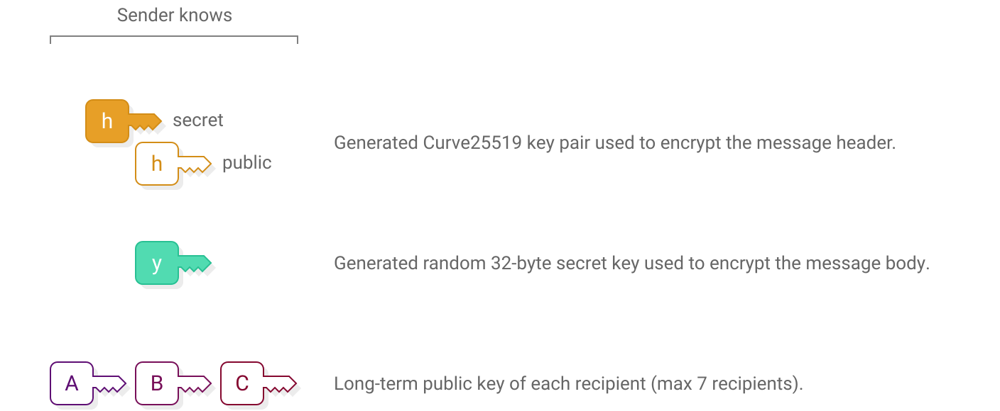Next, the sender uses scalar multiplication to derive a shared secret for each recipient:
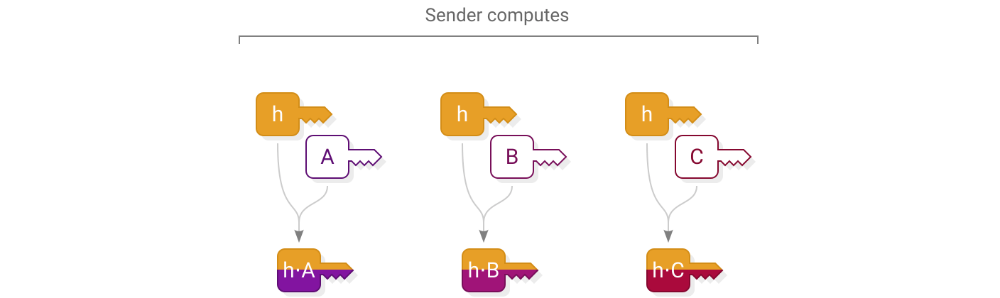The sender constructs the encrypted message by first enclosing the message content in a secret box, then enclosing the key needed to open it into a series of additional secret boxes, one to each recipient:
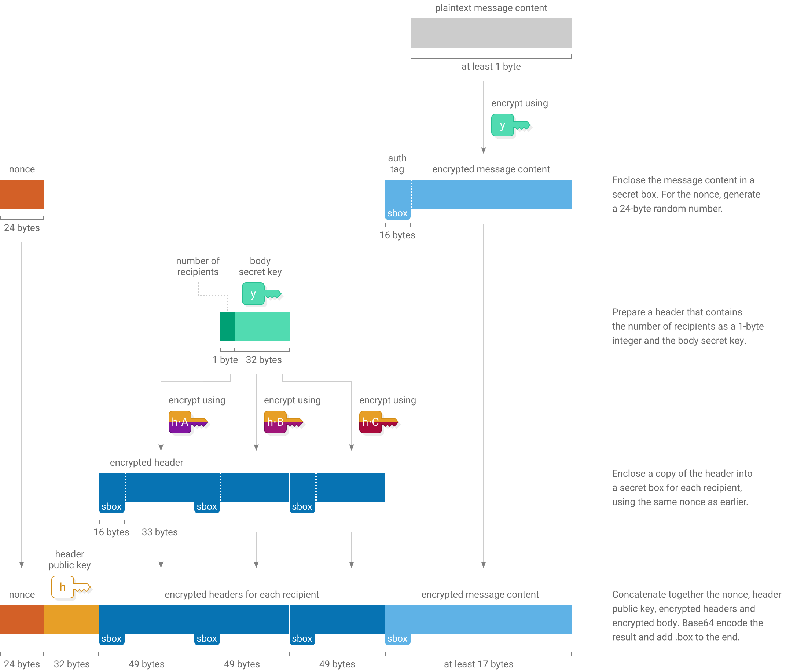Decrypting
Decrypting a private message involves scanning through the series of header secret boxes to see if any of them open using your long-term secret key. Then, if one of them opens, taking out the body secret key and using it to open the secret box holding the message content:
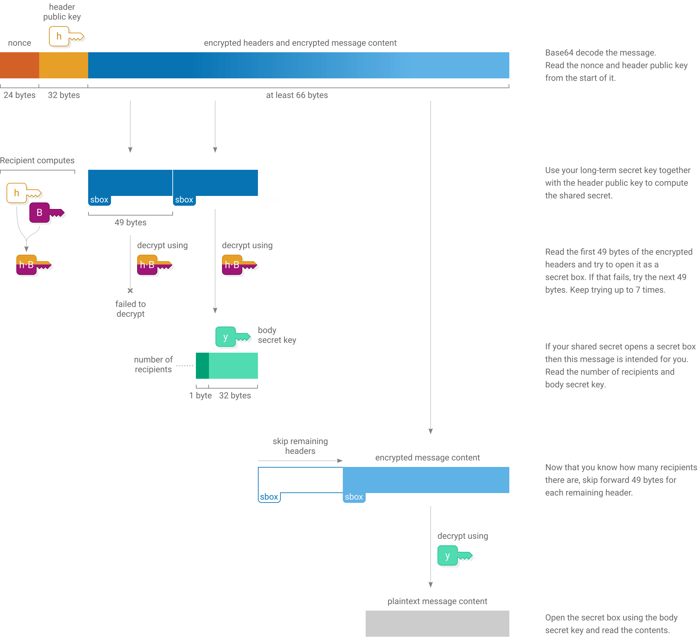